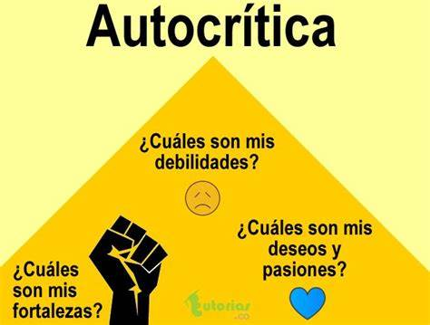
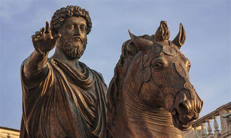

15 habitos estoicos
antes de ver los 15 habitos primero tienes que saber como adoptar un habito usaremos el libro habitos atomicos
para adoptar un habito necesitas saber que un habito,
un habito es eso que repites cada dia por
ejemplo usar el telefono.
bien para adoptar un habito puedes seguir estos pasos:
1 anota el habito que quieres tener
2 empieza de a poco cada dia, es decir que hacer ese habito te sea facil de hacer.
3 date recompensa por lograrlo cada dia
4 cuando ya lo hayas dominado aumenta el nivel dependiendo de que habito sea.
ahora te dare un ejemplo de estos pasos:
1 quiero hacer ejercicios y lo escribo en mi hoja de habitos
2 empiezo por comprometerme de que lo hare y empiezo por 2 minutos al dia
3 me doy una recompenza por lograrlo por ejemplo comer algo rico o descansar
4 a medida que me acostumbre aumento de 2 minutos a 3 luego a 10 y luego hasta donde quiera que es una hora al dia

1: salir de tu zona de confort :
la zona de confort es tu zona de comodidad y cuando sales de tu zona estas saliendo de tu zona de comodidad los estoicos practicaban este habito con tal de crecer cuando sales de tu zona y lo haces a diario estas expandiendo tu zona y creceras y aprenderas mas por ejemplo imaginate que eres un chico que nunca habla con mujeres pero quieres hacerlo y empiezas de a poco con una mujer luego otra y asi sucecivamente y al final ya no eres timido con las chicas por que expandiste tu zona este habito lo puedes hacer en cualquier situacion intentalo y si no te gusta lo puedes dejar.
2 autocontrol:
"realiza cada una de tus acciones como si fuera la última de tu vida". "No obres como si fueras a vivir mil años; obra como si el fin estuviera muy cerca".-Marco aurelio.
autocontrol es tener un control propio por ejemplo imagina que estas en tu casa y miras un dulce bueno una persona con autocontrol no se dejaria dominar por ese dulce o torta y se haria unas preguntas ¿que pasa si no lo como? ¿que pasaria si lo comiera? y una persona si autocontrol se dejaria dominar por ese dulceel autocontrol tambien implica no dejarse llevarse por sus emociones. un ejemplo de autocontrol seria de una persona que fue despedida de su empleo pero no se deja llevar por su ira. las personas que se enojan o se molestan por cualquier cosa son personas que se dejan llevar por sus emociones. si eres de esas personas tranquil@ todos fuimos asi o somos asi.
las emociones negativas normalmente nos hacen quejarnos de las cosas o al reves las cosas externas a veces nos hacen tener emociones negativas y hacernos quejar los estoicos buscaban ese autocontrol no se dejaban llevarse por las cosas externas, se enfocaban en si mismos para mejorar. eso si no siempre tenemos autocontrol por eso no te castigues si llevas como un mes con este habito pero te descuidas y te dejas llevarte por tus emociones. no somos seres perfecto pero tenemos ese don de intentarlo otra vez para terminar una forma para tener autocontrol es haciendo meditacion.
"Tienes poder sobre tu mente, no sobre los acontecimientos. Date cuenta de esto y encontrarás la fuerza".-Marco aurelio.
3.pensamiento autocritico :
la autocritica es el poder de ser honestos con nosotros mismos, y a muchas personas no le gusta ser autocriticos pprefieren vivir mintiendose a si mismos ami me a pasado seguramente a ti tambien, los estoicos practicaban este habito haciendose preguntas honestas que requieran respuestas honestas por ejemplo ¿soy bueno en esto? o me gusta esto? Una buena autocrítica no consiste simplemente en recordarnos las fallas que cometemos, sino también en identificar todas las cosas que estamos haciendo bien para deshacernos de las creencias que nos impiden avanzar y enfocarnos en las propias capacidadesun ejemplo de alguien sin autocritica: un joven con obesidad se se ve al espejo y se dice: no estoy tan gordo estoy comiendo sano. se miente asi mismo, una persona con autocritica diria: estoy gordo las cosas como son, y se preguntaria¿me gusta verme asi? ¿esta bien que coma comida basura? ¿que estoy haciendo mal? ¿por que estoy gordo? y se responde evita mentirte a ti mismo. las mentiras hacen daño y si te mientes te haces daño a ti mismo

4. fortalezer el cuerpo:
los estoicos hacian ejercicios para fortalezerse y fortalezer su espiritu y desarrollar la disciplina si no puedes ir al gym puedes hacer ejercicios en casa el habito de hacer ejercicio tiene muchos beneficios pero el que destacare sera el que estas construyendo y mejorando tu templo. tu templo es tu cuerpo y tu mente, te querras mas si tienes un mejor cuerpo y esa satisfaccion psicologica de que vas progresando con cada ejercicio. con cada flexion. cada sentadilla. si haces ejercicios felicidades este habito es de los mejores asi que adoptalo si puedes yo lo adopte y no me arrepiento de hacerlo cambie mucho gracias al ejercicio.5 bañarse con agua fria:
este habito es de los mas dificiles de adoptar si quieres no lo hagas. no estas obligado/a este habito esta ligado al habito del autocontrol y al de salir de tu zona de confort. este habito es un reto al principio pero tiene varios beneficios. es conveniente hacerlo por la mañana para tener una claridad mental. aumenta tu zona de confort hasta que te acostumbras y tienes mayor autocontrol.empieza de apoco con agua calentita por una semana luego tivia por otra semana. luego fria por una semana. puede ser de a semanas o a meses. .
6 equilibrio trabajo-ocio:
los estoicos querian pasar tiempo en familia pero sabian que tenian que trabajar para conseguir sus necesidades buscaban ese equilibrio por que si trabajaban mucho sabian que perderian tiempo con sus familias y el tiempo es como un rio hay gente que trabaja mucho pero se les complica pasar tiempo con sus hijos o parejaesta en tu poder buscar ese equilibrio no puedo decirte como por que cada uno tiene una situacion distinta define tu situacion y busca ese equilibrio de trabajar hasta quedar satisfecho con lo que hiciste y pasar tiempo en familia o tiempo contigo mismo.

7 enfocarse en lo que depende de ti:
los estoicos sabian bien que hay cosas que no dependen de uno mismo por ejemplo el clima o las opiniones de los demas por eso mismo para que pensar en cosas que no dependan de ti? los estoicos se enfocaban en lo que podian controlar y aceptaban las cosas incontrolables con eso en mente buscaban la virtud de uno mismo. hazte esta pregunta ¿ que es eso que depende de mi? y que es eso que no depende de mi?bueno lo que depende de ti en terminos simple es eso que tu puedes hacer. son tus acciones,decisiones y tus pensamientos es tu yo mismo.
estas donde estas por tus acciones y desiciones. v lo que no depende de ti son aquellas cosas externas que no puedes controlar tambien incluye el pasado y el futuro
si eres estudiante no te enfoques en el resultado de un exaamen enfocate en estudiar para ese examen. los estoicos sabian bien esto y por eso no se dejaban llevarse por cosas externas que nadie te controle.
si tienes un objetivo no te enfoques en ese resultado enfocate en el proceso

8 meditar:
meditar es sentarte, cerrar los ojos y analizar que pensamientos tienes deja que fluyan si son negativos no lo saques analizalo meditar tiene muchos beneficios como mayor atencion y concentracion para los estoicos les sirvia para tener paz mental. para gestionar mejor sus emociones y autocontrol. basta con hacerlo 5 minutos al dia
9 evaluacion del dia:
evaluar tu dia es analizar que hiciste en el dia ( es recomendable hacerlo por la noche para ver el panorama completo) evaluar tu dia es preguntarte ¿que hice bien hoy? ¿que hice mal? como puedo mejorar? hoy hice lo que me propuse?si estas trabajando en tus metas la evaluacion seria: ¿hoy trabaje para acercarme a esa meta que quiero alcanzar?
valio la pena? como puedo repetir este exito? hoy hice las cosas que me propuse?
este habito te ayuda a saber en que aspectos eres pesimo o bueno. y como mejorar intentalo.
10 desconecta cualquier distraccion y ruido externo:
recuerda los estoicos solo se enfocaban en si mismos es inevitable que usemos los aparatos como celulares y pc pero si no le ponemos un limite nos terminaran dominando tarde o temprano no te dejes controlar por el INTERNET(algo externo) las redes buscan quitartelas redes buscan quitarte tu precioso y valioso tiempo. este habito no trata de no usar nunca mas un celular o tablet.trata de que te pongas limites en tu uso diario de las redes o en cosas de que te desconcentren de tu objetivo por ejemplo yo solo puedo jugar 2 horas al dia y solo puedo ver 4 horas de youtube ese tipo de limites
hazte esta pregunta cuando este usando tu celular,tablet o compu ¿voy a dejar que me controle? ¿esto me esta llevando hacia mis metas o me aleja? ¿ esto que estoy viendo me sirve o me distrae?
tip: si usas los aparatos para estudiar o trabajar desactiva las notificaciones o mirate videos de este tema.
no permitas malgastar tu tiempo que es tu mayor activo.
ademas usar mucho tiempo los aparatos te consumen los ojos
11 escuchar a tu sabio interno:
para los estoicos su sabio interior es aquel mas sabio e inteligente que uno mismo como marco aurelio o seneca y epicteto tu sabio interno es ese mentor o maestro que tienes y que confias muchoimagina que tu sabio es tu mama y tienes un problema preguntate: ¿que haria mi madre en esta situacion? como lo resolveria ella?
si no tienes un sabio interior o mentor busca

12 adquiere una perspectiva mas amplia:
este habito trata de que no te encierres en tu propio juicio escucha las opiniones constructivas, ecucha a los sabios los estoicos expandian su perspectiva escuchando a los sabios de aquellos tiempos13 comparte tiempo con tu famila:
ya se que este habito es igual que el de trabajo-ocio pero lo quise poner de todas formas. la familia es importante puedes tener varias familias. las familias no se crean con la sangre se crean con la union de varias personaspasa tiempo con la gente que tu quieres y si odias a alguien no estas obligado/a a estar con esa persona
si tienes una familia que te apoya cuidala
si tienes una familia que no te apoya no la odies busca una familia que te apoye y te quiera o crea una familia. tu elijes
14 planifica el dia siguiente:
este habito no es tan estoico pero igual te servira si lo sabes hacer. planificar el dia siguiente significa planificar las acciones que haras cuando te despiertes hasta antes de dormir. hay varias maneras de planificar pero quedate con la que mejor te convengasi tienes metas planifica el dia con el enfoque de hacer las tareas necesarias para avanzar hacia tus objetivos.
si eres estudiante planfica hacer la tarea, estudiar, ir ala esc, comer etc.
te sera mas facil si tienes rutinas y puedes usar google calendar o notion para planificar mejor el dia incluso la semana